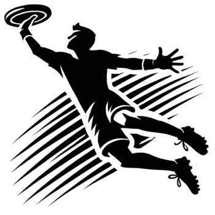

Ultimate Tracker is a web application designed to make tracking ultimate frisbee games easier. Players can create or join games, keep track of scores and individual statistics, and see game updates in real time. The app also provides weather information for the game location, including temperature, conditions, and wind.
Whether you're playing a casual pickup game or a competitive match, Ultimate Tracker keeps the important information in one place so players can focus more on the game and less on keeping track of the details.